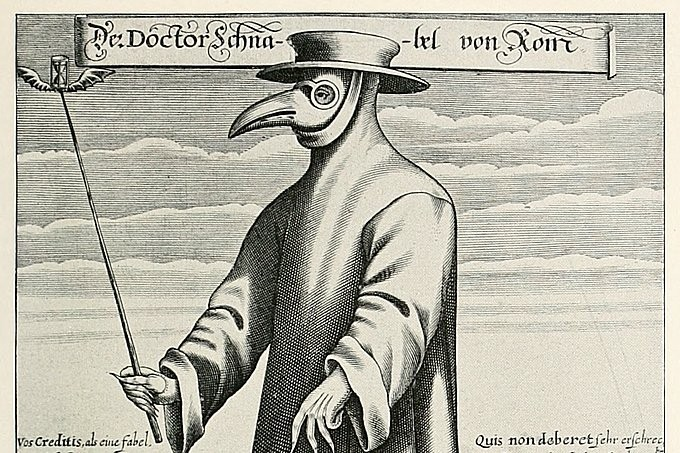
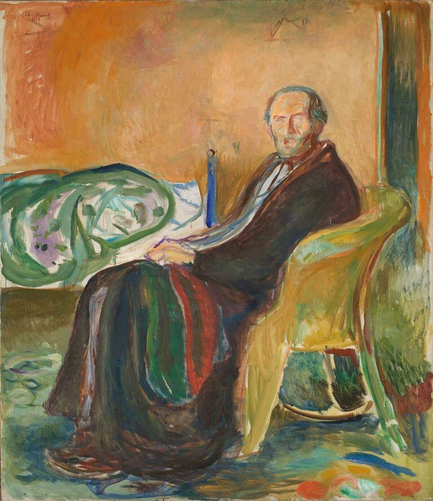
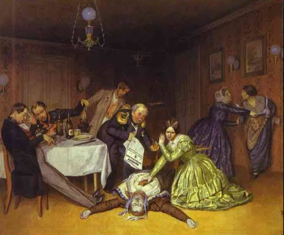
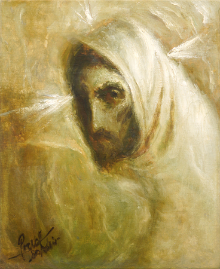
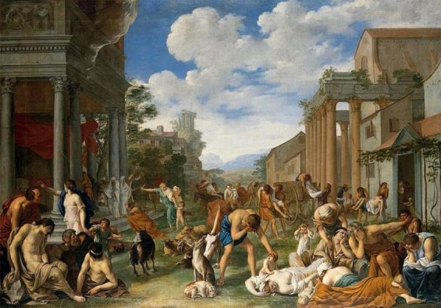

Com o objetivo de informar, conscientizar e educar sobre as pandemias históricas vividas pela humanidade, o Museu Virotic apresenta quadros de artistas que as vivenciaram, informando não somente sobre a arte, mas também sobre os vírus causadores e seus sintomas que dizimaram populações ao longo dos séculos. Veja as exposições em destaque:
Veja todas as nossas exposições. Observe informações como a origem do microrganismo, como foi erradicada além de dados sobre as obras

Peste Negra
Doença bacteriana
Atingiu o continente europeu em meados do século XIV (1343–1353). Artistas como: Arnold Böcklin e Pieter Brueguel retrataram momentos vividos na época:

Gripe espanhola
Infecção viral
A pandemia infectou uma estimativa de 500 milhões de pessoas. O artista Edvard Munch representou a doença em uma de suas obras. Clique e veja mais:

Cólera
Doença bacteriana
Sete pandemias de cólera ocorreram nos últimos 200 anos. Pavel Fedotov pintou uma morte por cólera repesentando pânico, terror e indiferença. Clique e veja mais:

Tuberculose
Doença bacteriana
A tuberculose, também chamada de ‘peste branca’ ou ‘doença do peito’. Em sua obra, Fidélio Ponce de León destaca o isolamento dos personagens. Clique e veja mais:

Peste de Atenas
Doença bacteriana
A peste de Atenas é como ficou conhecida a epidemia que atingiu a cidade de Atenas entre 430 a.C. e 427 a.C. Clique e veja mais:
Informe-se
O que é...
Pandemia; Epidemia; Endemia; Surto; Infecção; Doença e Virose